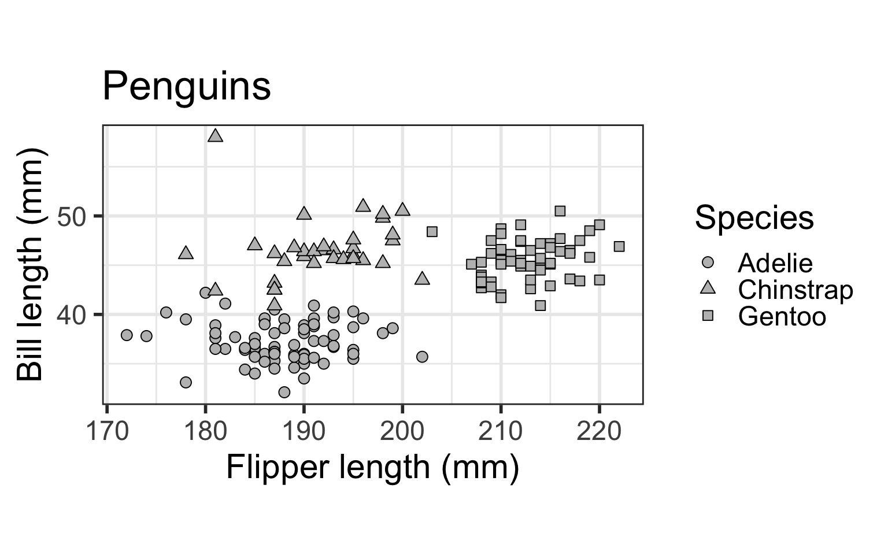
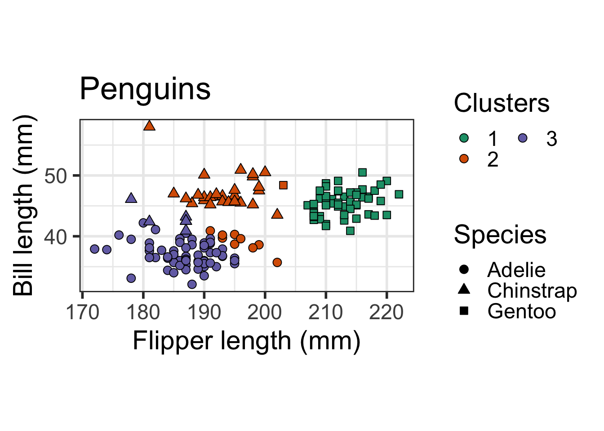

In this tutorial, we demonstrate how to use the clusterpval package to compute p-values for a difference in means between two clusters obtained by applying any user-specified clustering method to a data set.
First, load the package:
require(clusterpval)We will illustrate the software on a subset of the Palmer penguins data, which contains data on three species of penguins: Adelie, Chinstrap, and Gentoo.
require(palmerpenguins)
require(ggplot2)
options(ggplot2.discrete.colour=list(RColorBrewer::brewer.pal(6, "Dark2")))
dat <- penguins[complete.cases(penguins), ]
dat <- dat[dat$sex == "female", c(1, 3, 5)]
ggplot(dat) + geom_point(aes(x=flipper_length_mm, y = bill_length_mm,
shape=as.factor(species)), size = 3, fill="grey", colour="black") +
scale_shape_manual(name="Species", values=c(21, 24, 22)) +
ylab("Bill length (mm)") + xlab("Flipper length (mm)") + coord_fixed() +
theme_bw(base_size=22) + ggtitle("Penguins") + theme(legend.position="right")
We will define a clustering function that takes a \(n \times p\) numeric data matrix as input, and outputs integer assigments to clusters 1 through \(k\). The following snippet makes a function to run \(k\)-means clustering with \(k = 3\) and 50 random starts.
km_cluster <- function(X) {
km <- kmeans(X, 3, nstart=50)
return(km$cluster)
}Let’s cluster the data using this custom clustering function. (We set the seed here because \(k\)-means clustering is a non-deterministic clustering method.)
X <- as.matrix(dat[, -c(1)]) # remove species and convert to matrix
set.seed(123)
cl <- km_cluster(X)
table(dat$species, cl)## cl
## 1 2 3
## Adelie 0 9 64
## Chinstrap 0 28 6
## Gentoo 57 1 0ggplot(dat) + geom_point(aes(x=flipper_length_mm, y = bill_length_mm,
shape=as.factor(species), fill=as.factor(cl)), size = 3, colour="black") +
scale_fill_discrete(name="Clusters", guide=guide_legend(ncol=2, override.aes=list(shape=21))) +
scale_shape_manual(name="Species", values=c(21, 24, 22), guide=guide_legend(override.aes=list(fill="black"))) +
ylab("Bill length (mm)") + xlab("Flipper length (mm)") + coord_fixed() +
theme_bw(base_size=22) + ggtitle("Penguins") + theme(legend.position="right") 
Observe that Cluster 1 contains Gentoo penguins, Cluster 2 contains mostly Chinstrap penguins, and Cluster 3 contains mostly Adelie penguins.
We’ll test for a difference in means between Cluster 1 (containing Gentoo penguins) and Cluster 2 (containing mostly Chinstrap penguins) using the test_clusters_approx function. This approximately computes a p-value for the difference in means using Monte Carlo sampling. By default, this function plugs in a simple estimate of \(\sigma^2\) given by \(\sum \limits_{i=1}^n \sum \limits_{j=1}^p (x_{ij} - \bar{x}_j)^2/(np-p)\), where \(\bar{x}_j\) is the mean of the \(j\)th feature. Note that if there really are clusters in the data, then this estimate will be larger than it should be, but if there really are no clusters in the data, then this estimate will be unbiased and consistent.
test_clusters_approx(X, k1=1, k2=2, cl_fun=km_cluster, cl=cl, ndraws=10000) # pass in the clustering function and the clustering results## $stat
## [1] 18.74583
##
## $pval
## [1] 0.006990718
##
## $stderr
## [1] 0.0006831981
##
## $clusters
## [1] 3 2 3 3 3 3 2 3 3 3 3 3 3 3 3 3 3 3 3 3 3 3 3 3 3 3 3 3 3 3 3 3 3 2 3 2 3
## [38] 3 3 3 3 3 2 3 3 3 3 3 3 3 2 3 2 2 3 3 3 3 3 3 3 3 3 3 3 3 3 2 3 3 3 3 3 1
## [75] 1 1 1 1 1 1 1 1 1 1 1 1 1 1 1 1 1 1 1 1 1 1 1 1 1 1 1 1 1 1 1 1 1 1 1 1 1
## [112] 1 1 1 1 1 1 1 1 1 2 1 1 1 1 1 1 1 1 1 1 2 2 2 3 2 2 2 2 2 2 3 3 2 2 2 3 3
## [149] 2 2 2 2 2 2 2 2 2 2 3 2 2 2 2 2 2In the results above, the estimated p-value comes from Monte Carlo, which means that it is subject to Monte Carlo sampling error. Thus, we also report a standard error estimate for the p-value, that captures the uncertainty due to Monte Carlo sampling error. If more precision is desired, you could adjust the number of Monte Carlo samples using the ndraws argument of test_clusters_approx. Since we opted to pass in the estimated clusters cl, the output under $clusters just prints cl. If we had opted to not pass in the estimated clusters cl, then the test_clusters_approx function would run km_cluster(X), and return it in the $clusters output.
Observe that the estimated p-value for a difference in means between Cluster 1 and Cluster 2 is small - this is good, because the penguin species are different in the two clusters.
© 2020 Lucy L. Gao (lucy dot gao at uwaterloo dot ca)